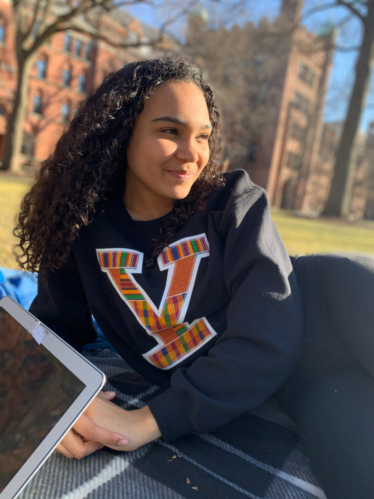

Board Members For the 2020-2021 Academic Year
Jaida Morgan 2023, Communications Director and Website Manager
Jaida is a potential Molecular, Cellular, and Developmental Biology/HSHM Medicine & Public Health double major from Southern California. She lives in Ezra Stiles College and plans on attending graduate school to pursue a career in cancer research.
Email Jaidaphotos
bios